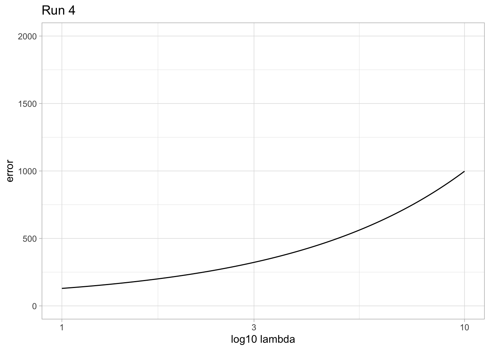

DATA_DIR <- "../data/train-test/"Simple Regression
Important
This page is currently under construction, and being slowly updated with better explanations and formatting.
Overview
In this exercise, I will be implementing linear and polynomial regression in R using a pre-made training and testing data set. I try to make this exercise as simple as possible, so I will not be going into the mathematical details of linear and polynomial regression. I will also provide explanations for as many lines of code as possible, so that you can follow along with the code and understand what is going on.
Background
In supervised learning, our input variables, also called features, are used in order to predict an output variable, also called a label. There are different types of output variables that we may be interested in, which would fall under the category of regression or classification. In regression problems, we are interested in predicting a continuous output variable, whereas in classification problems, we are interested in predicting a discrete output variable. In this exercise, we will be working with a regression problem, where we are interested in predicting a continuous output variable.
Output variable examples
In a classification problem, we might input features based on tumour width and height, and predict whether or not the tumour is malignant or benign. The output variable in this case would be a discrete variable, either 0 or 1, where 0 represents benign and 1 represents malignant.
In a regression problem, we might input features based on gene expression levels of several other genes, and predict the gene expression level of a specific gene of interest. The output variable in this case would be a continuous variable, where the gene expression level is represented by a floating point number.
In each of these types of problems, the input variables can be anything (continuous or discrete), but the type of output variable will determine whether or not the problem is a regression or classification problem.
Other supervised learning problems
While classification and regression are the most commonly seen supervised learning problems, other supervised learning problems include:
- Ranking: Predicting the order of a set of items.
- Sequence labeling: Assigning a label to each element in a sequence of inputs.
- Structured prediction: Predicting a structured output, such as a sequence, tree, or graph.
Loading data
I am working with a relatively small and simple dataset of random datapoints. The data is comprised of a total of 60 datapoints; 40 of which belong to the training set, and 20 of which belong to the testing set. When working in regression problems or other problems involving a training and test set, it is generally advised that you split your data into a ratio of 70-80% training set, and 20-30% testing set; however, for the purposes of this exercise, I will be using a 2/1 ratio. The data is just a simple x and y coordinate, and the goal is to find a line of best fit for the data. In the context of machine learning applications, your x and y coordinates would represent your features and labels, respectively.
You can see an overview of the dataset I am working with here:
The data is available in the source repository as xtr.dat and ytr.dat for the training data, and xte.dat and yte.dat for the testing data, in the following directory:
The file extensions (.dat) are arbitrary, but the files are space-delimited. The delimiter shouldn’t actually matter since the data only contains one column per file, but alternatively the dat file could include both x and y values in the same file, in which case the delimiter would be important.
To load the data into R, you can use the following code:
# Read in the training dataset file
x_tr <- read.delim(
file = file.path(DATA_DIR, "xtr.dat"),
col.names = "x_tr",
colClasses = c("numeric")
)
y_tr <- read.delim(
file = file.path(DATA_DIR, "ytr.dat"),
col.names = "y_tr",
colClasses = c("numeric")
)
# Store the training data into a dataframe
df_tr <- data.frame(x_tr, y_tr)
# Read in the testing dataset file
x_te <- read.delim(
file = file.path(DATA_DIR, "xte.dat"),
col.names = "x_te",
colClasses = c("numeric")
)
y_te <- read.delim(
file = file.path(DATA_DIR, "yte.dat"),
col.names = "y_te",
colClasses = c("numeric")
)
# Store the testing data into a dataframe
df_te <- data.frame(x_te, y_te)- 1
-
Read in the training data x-values and store the data into variable
x_tr. - 2
-
Parameter
filespecifies the path to the file. I’m using thefile.pathfunction to join the directory path with the file name, giving me the full path to my file. - 3
-
Parameter
col.namesspecifies the name of the column. If I didn’t specify this, the column would be named the default, which would end up being something based on the first line of the file, but since we don’t have a header this wouldn’t be very descriptive. - 4
-
Parameter
colClassesspecifies the type of the column. This is optional as R should be able to infer the type, but I’m specifying it here to be explicit. - 5
- Repeat steps 1-4 for the training data y-values file.
- 6
- Store the training data into a dataframe, mapping x values to y values.
- 7
- Repeat steps 1-4 for the testing data x-values file.
- 8
- Repeat steps 1-4 for the testing data y-values file.
- 9
- Store the testing data into a dataframe, mapping x values to y values.
Here is what the dataframes look like now (from the first few rows):
head(df_tr) x_tr y_tr
1 3.1381904 15.289011
2 3.4421490 19.023864
3 1.3083408 9.349968
4 0.9954419 10.105849
5 3.2414549 14.950901
6 2.8537392 12.890953head(df_te) x_te y_te
1 2.6561232 12.932647
2 1.7697643 12.440984
3 0.5508280 8.436577
4 0.8144506 6.669349
5 0.8797143 11.014746
6 3.1300948 16.114484Each row is a training example (or instance), and the columns represent the x and y coordinates, or features and labels.
In case you haven’t picked up on it yet, tr will be a suffix referring to the training data, and te will be a suffix referring to the testing data.
Now that we have the data loaded into R, we can plot it to see what it looks like:
# Setup libraries
library(ggplot2)
library(patchwork)
# Plot training dataset
plt_tr <- ggplot(
data = df_tr,
mapping = aes(x = x_tr, y = y_tr)
) +
geom_point() +
xlim(0, 4) +
ylim(0, 30) +
ggtitle("Training") +
theme_light()
# Plot test dataset
plt_te <- ggplot(
data = df_te,
mapping = aes(x = x_te, y = y_te)
) +
geom_point() +
xlim(0, 4) +
ylim(0, 30) +
ggtitle("Testing") +
theme_light()
plt_tr + plt_te- 1
-
Load the
ggplot2andpatchworklibraries. We’ll be using these to produce plots and display them. - 2
- Create a ggplot object for the training data.
- 3
-
Parameter
dataspecifies the dataframe to use for the plot. We’re using the training data dataframe. - 4
-
Parameter
mappingspecifies the mapping of the dataframe columns to the plot axes, i.e. what our x variable and y variable are in terms of column names. These go in the aes function, for specifying aesthetics of the plot. - 5
-
Specify the plot type;
geom_pointis a basic scatter plot, ideal for plotting individual data points. Usinggeom_scattercould also work here. - 6
- Set the x and y axis limits. This is optional, but I’m specifying them to manually the plots limits rather than auto-detecting.
- 7
- Set the plot title.
- 8
- Set the plot theme.
- 9
- Repeat steps 2-8 identically, but this time for the testing data.
- 10
- Combine (and show) the two plots into a single plot.

We can see that the data follows some sort of trend, but not one we can clearly identify yet. We’ll start by trying to fit a linear regression line to the data to see if we can get a better idea of what the trend is.
Linear Regression
The intiutive start to investigating the regression fit of the data would be to start with the first order, or linear, regression. This is a simple model that assumes the relationship between x and y is linear. We will continue to use our variables \(x\) and \(y\) to represent the input and output of our model, respectively.
When formulating our problem function, we want to find a function \(h\) such that \(h(x) \approx y\). For every input \(x\), we want the output \(h(x)\) to be as close to the actual output \(y\) as possible. The \(h\) stands for hypothesis, and is in terms of \(x\). The dimensions of x corresponds to how many features we have, and the dimension of y corresponds to how many labels we have. In this example, both dimensions are 1, since we only have one feature and one label.
Consider the following model: \[h_w(x) = w^\top x + b\]
where \(w\) is a vector of weights of size \(n\) where \(n\) is equvialent to the length of vector \(x\); and \(b\) is a bias term, a vector on constants the same dimension as \(x\). The bias term is a constant value that is added to the output of the model, the same concept you know from a basic linear function \(y = mx + b\). The weights are multiplied by the input features, and then added to the bias term to get the output of the model.
Since having the bias term adds a level of complexity to the formula, we can adjust the weights to include the bias term by adding a column of 1’s to the input features, which would have the same effect. The simplified notation would then be:
\[h_w(x) = w^\top x\]
where \(w\) is a weight vector that includes the bias term, i.e. both \(w\) and \(x\) are now of size \(n+1\). That extra column included in \(w\) is a column of 1’s, and the extra column included in \(x\) is the vector \(b\). In essence, we hide the existence of the bias term inside the weights vector; one less variable for us to worry about.
The above formula would be equivalent to the following: \[ h_w(x) = \begin{bmatrix} w_1 \\ w_2 \\ ... \\ w_n \end{bmatrix} \cdot \begin{bmatrix} x_1 & x_2 & ... & x_n \end{bmatrix} \]
Model Solving
We’ll work with the training data only for now, as once we have a weights vector and a completed model, we can then use the testing data to evaluate the model. To relate our data to the linear regression model, we first have to add the column vector of 1’s to the features to account for the bias term.
# Add column of 1's to training features
x_tr_1 <- cbind(
x_tr,
b = rep(1, length(x_tr))
)- 1
-
Create a new variable,
x_tr_1, that is the result of thecbindfunction. This function takes vectors (or dataframes) and combines them by their columns, hence the namecbindfor column bind. We will want to combine our original features with a column of 1’s of the same length. - 2
-
Specify our first vector to combine,
x_tr. This is the original training features vector. - 3
-
The second vector to combine will be a column containing just ones of the same length as our orignal vector. We can create this column of 1’s on the fly (instead of manually) by using the
repfunction. Therepfunction takes a value and repeats it a specified number of times. In this case, we want to repeat the value 1,length(x_tr)times. Thelengthfunction returns the length of a vector, in this case the number of elements inx_tr.
Now x_tr_1 looks like this:
head(x_tr_1) x_tr b
1 3.1381904 1
2 3.4421490 1
3 1.3083408 1
4 0.9954419 1
5 3.2414549 1
6 2.8537392 1Like with our _tr suffix, I use the _1 suffix to represent variables for linear regression. Later on I’ll be using other regression models such as _2 for second-order polynomial regression, _3 for third-order, etc.
Now that we have our training features with the bias term included, we can use the training labels to solve for the weights vector by rearranging the linear regression formula. Using matrix algebra, we derive the formula for solving for the weights vector:
\[w = (x^\top x)^{-1} x^\top y\]
where \(X\) is the matrix of training features, \(y\) is the vector of training labels, and \(w\) is the vector of weights. The \(X^\top\) notation is the transpose of \(X\), and the \(X^{-1}\) notation is the inverse of \(X\). The inverse of a matrix is a matrix that when multiplied by the original matrix, results in the identity matrix. The identity matrix is a square matrix with 1’s on the diagonal and 0’s everywhere else. The identity matrix is the multiplicative identity, meaning that when multiplied by any matrix, the result is the original matrix. The inverse of a matrix is the multiplicative inverse, meaning that when multiplied by the original matrix, the result is the identity matrix.
Matrix operations are available in base R, including %*% for matrix multiplication, t for transposing a matrix, and solve for solving a matrix equation. When solve is only provided one parameter, it solves for the inverse of the input matrix. We can use these functions to solve for the weights vector.
# Convert training dataframes to matrices
y_tr_mat <- as.matrix(y_tr)
x_tr_1 <- as.matrix(x_tr_1)
# Solve for weight vector using training data
w <- solve(t(x_tr_1) %*% x_tr_1) %*% (t(x_tr_1) %*% y_tr_mat)- 1
-
To perform matrix operations on our dataframes, we need to first convert them to matrices. We can do this using the
as.matrixfunction. I renamey_trtoy_tr_matto store its matrix variable separately, since it will be reused later on in the code. - 2
-
Solve for
wusing the formula above, withx_tr_1as X andy_tr_matas y. We use the%*%operator for matrix multiplication, thesolvefunction to solve for the inverse of a matrix, and thetfunction to transpose a matrix. The brackets are there to visually support the order of operations.
Now that we have our weights vector \(w\), the full linear regression formula is complete and we can plot the resulting function on top of our training data.
# Plot linear regression on training set
plt_tr_1 <- ggplot(
data = df_tr,
mapping = aes(x = x_tr, y = y_tr)
) +
geom_point() +
stat_function(fun = function(x) {
w[1] * x + w[2]
}) +
xlim(0, 4) +
ylim(0, 30) +
theme_light()
plt_tr_1
Average Error
# compute average training error
eq_tr_1 <- t(as.data.frame(t(w) %*% t(x_tr_1)))
errors_tr_1 <- (eq_tr_1 - y_tr_mat)**2
err_avg_tr_1 <- colSums(errors_tr_1) / length(errors_tr_1)
err_avg_tr_1 y_tr
2.143112 The average error of the training set using the linear regression model is 2.287073.
Plot both the regression line and the test data on the same graph. Also report the average error on the test set using Eq. (1).
# convert training outputs to matrix
y_te_mat <- as.matrix(y_te)
# add column of 1s to testing features
x_te_1 <- cbind(x_te, b = rep(1, length(x_te)))
x_te_1 <- as.matrix(x_te_1)
# plot linear regression on test set
plt_te_1 <- ggplot(
data = df_te,
mapping = aes(x = x_te, y = y_te)
) +
geom_point() +
stat_function(fun = function(x) {
w[1] * x + w[2]
}) +
xlim(0, 4) +
ylim(0, 30) +
theme_light()
plt_te_1
# compute average test error using same weight vector from training data
eq_te_1 <- t(as.data.frame(t(w) %*% t(x_te_1)))
errors_te_1 <- (eq_te_1 - y_te_mat)**2
err_avg_te_1 <- colSums(errors_te_1) / length(errors_te_1)
err_avg_te_1 y_tr
9.973294 # store average errors:
errs <- data.frame(
"training" = err_avg_tr_1,
"testing" = err_avg_te_1,
row.names = "order1"
)The average error of the testing set using the linear regression model is 9.427358.
Polynomial Regression
Second Order Polynomial
Implement the 2nd-order polynomial regression by adding new features x2 to the inputs. Repeat (b) and (c). Compare the training error and test error. Is it a better fit than linear regression?
# add second order polynomial to features
x_tr_2 <- as.matrix(x_tr_1[, 1]**2)
x_tr_2 <- cbind(x_tr_2, x_tr_1)
# compute weight vector
w2 <- solve(t(x_tr_2) %*% x_tr_2) %*% (t(x_tr_2) %*% y_tr_mat)
# plot polynomial regression on training set
plt_tr_2 <- ggplot(df_tr, aes(x = x_tr, y = y_tr)) +
geom_point() +
stat_function(fun = function(x) {
(w2[1] * x^2) + (w2[2] * x) + w2[3]
}) +
xlim(0, 4) +
ylim(0, 30) +
theme_light()
plt_tr_2# compute average training error
eq_tr_2 <- t(as.data.frame(t(w2) %*% t(x_tr_2)))
errors_tr_2 <- (eq_tr_2 - y_tr_mat)**2
err_avg_tr_2 <- colSums(errors_tr_2) / length(errors_tr_2)
err_avg_tr_2 y_tr
1.98476 # add columns to testing features
x_te_2 <- as.matrix(x_te_1[, 1]**2)
x_te_2 <- cbind(x_te_2, x_te_1)
# plot polynomial regression on test set
plt_te_2 <- ggplot(data = df_te, mapping = aes(x = x_te, y = y_te)) +
geom_point() +
stat_function(fun = function(x) {
(w2[1] * x^2) + (w2[2] * x) + w2[3]
}) +
xlim(0, 4) +
ylim(0, 30) +
theme_light()
plt_te_2
# compute average testing error using same weight vector from training data
eq_te_2 <- t(as.data.frame(t(w2) %*% t(x_te_2)))
errors_te_2 <- (eq_te_2 - y_te_mat)**2
err_avg_te_2 <- colSums(errors_te_2) / length(errors_te_2)
err_avg_te_2 y_tr
12.16348 # store average errors
errs <- rbind(errs, order2 = c(err_avg_tr_2, err_avg_te_2))
errs training testing
order1 2.143112 9.973294
order2 1.984760 12.163477Comparing the training error and test error, this second order polynomial regression model performs worse than the linear model, with a better training fit but a worse testing fit. Thus, the linear regression model is a better fit.
Third Order Polynomial
Implement the 3rd-order polynomial regression by adding new features x2,x3 to the inputs. Repeat (b) and (c). Compare the training error and test error. Is it a better fit than linear regression and 2nd-order polynomial regression?
# add third order polynomial to features
x_tr_3 <- as.matrix(x_tr_1[, 1]**3)
x_tr_3 <- cbind(x_tr_3, x_tr_2)
# compute weight vector
w3 <- solve(t(x_tr_3) %*% x_tr_3) %*% (t(x_tr_3) %*% y_tr_mat)
# plot polynomial regression on training set
plt_tr_3 <- ggplot(df_tr, aes(x = x_tr, y = y_tr)) +
geom_point() +
stat_function(fun = function(x) {
(w3[1] * x^3) + (w3[2] * x^2) + (w3[3] * x) + w3[4]
}) +
xlim(0, 4) +
ylim(0, 30) +
theme_light()
plt_tr_3# compute average training error
eq_tr_3 <- t(as.data.frame(t(w3) %*% t(x_tr_3)))
errors_tr_3 <- (eq_tr_3 - y_tr_mat)**2
err_avg_tr_3 <- colSums(errors_tr_3) / length(errors_tr_3)
err_avg_tr_3 y_tr
0.8850264 # add columns to testing features
x_te_3 <- as.matrix(x_te_1[, 1]**3)
x_te_3 <- cbind(x_te_3, x_te_2)
# plot polynomial regression on test set
plt_te_3 <- ggplot(data = df_te, mapping = aes(x = x_te, y = y_te)) +
geom_point() +
stat_function(fun = function(x) {
(w3[1] * x^3) + (w3[2] * x^2) + (w3[3] * x) + w3[4]
}) +
xlim(0, 4) +
ylim(0, 30) +
theme_light()
plt_te_3
# compute average testing error using same weight vector from training data
eq_te_3 <- t(as.data.frame(t(w3) %*% t(x_te_3)))
errors_te_3 <- (eq_te_3 - y_te_mat)**2
err_avg_te_3 <- colSums(errors_te_3) / length(errors_te_3)
err_avg_te_3 y_tr
2.715822 # store average errors
errs <- rbind(errs, order3 = c(err_avg_tr_3, err_avg_te_3))
errs training testing
order1 2.1431122 9.973294
order2 1.9847596 12.163477
order3 0.8850264 2.715822This time, the training error has improved much more than with the second order model. In addition, the testing error has also dramatically improved, even better than our original best linear regression model. Overall, this third order polynomial regression is a better fit than both the linear and second order models.
Fourth Order Polynomial
Implement the 4th-order polynomial regression by adding new features x2,x3,x4 to the inputs. Repeat (b) and (c). Compare the training error and test error. Compared with the previous results, which order is the best for fitting the data?
# add fourth order polynomial to features
x_tr_4 <- as.matrix(x_tr_1[, 1]**4)
x_tr_4 <- cbind(x_tr_4, x_tr_3)
# compute weight vector
w4 <- solve(t(x_tr_4) %*% x_tr_4) %*% (t(x_tr_4) %*% y_tr_mat)
eq_tr_4 <- t(as.data.frame(t(w4) %*% t(x_tr_4)))
# plot polynomial regression on training set
plt_tr_4 <- ggplot(df_tr, aes(x = x_tr, y = y_tr)) +
geom_point() +
stat_function(fun = function(x) {
(w4[1] * x^4) + (w4[2] * x^3) + (w4[3] * x^2) + (w4[4] * x) + w4[5]
}) +
xlim(0, 4) +
ylim(0, 30) +
theme_light()
plt_tr_4
# compute average training error
errors_tr_4 <- (eq_tr_4 - y_tr_mat)**2
err_avg_tr_4 <- colSums(errors_tr_4) / length(errors_tr_4)
err_avg_tr_4 y_tr
0.8833612 # add columns to testing features
x_te_4 <- as.matrix(x_te_1[, 1]**4)
x_te_4 <- cbind(x_te_4, x_te_3)
# equation using same weight vector from training data
eq_te_4 <- t(as.data.frame(t(w4) %*% t(x_te_4)))
# plot polynomial regression on test set
plt_te_4 <- ggplot(data = df_te, mapping = aes(x = x_te, y = y_te)) +
geom_point() +
stat_function(fun = function(x) {
(w4[1] * x^4) + (w4[2] * x^3) + (w4[3] * x^2) + (w4[4] * x) + w4[5]
}) +
xlim(0, 4) +
ylim(0, 30) +
theme_light()
plt_te_4
# compute average testing error using same weight vector from training data
errors_te_4 <- (eq_te_4 - y_te_mat)**2
err_avg_te_4 <- colSums(errors_te_4) / length(errors_te_4)
err_avg_te_4 y_tr
3.05486 # store average errors
errs <- rbind(errs, order4 = c(err_avg_tr_4, err_avg_te_4))
errs training testing
order1 2.1431122 9.973294
order2 1.9847596 12.163477
order3 0.8850264 2.715822
order4 0.8833612 3.054860Using fourth order polynomial regression, our training error has slightly improved, however, the testing error has slightly gotten worse, by a larger amount. While it is close to the third order polynomial regression, overall the data has become slightly overfitted, and so the best model for fitting our data is the third order polynomial regression model.
Regularization and Cross-Validation
Using the training data to implement l2-regularized for the 4th-order polynomial regres- sion (page 12 of Lecture 4, note that we do not penalize the bias term w0), vary the regularization parameter λ ∈ {0.01, 0.05, 0.1, 0.5, 1, 100, 106 }. Plot the training and test error (averaged over all instances) using Eq. (1) as a function of λ (you should use a log10 scale for λ). Which λ is the best for fitting the training data? Which λ is the best for fitting the test data?
# create identity matrix with 0 at position (1, 1)
i_hat <- diag(nrow(w4))
i_hat[1, 1] <- 0
# function calculating training error in terms of lambda
l2_error_tr <- function(lambda) {
l <- 0.5 * norm(x_tr_4 %*% w4 - y_tr_mat)^2 +
lambda / 2 * t(w4) %*% i_hat %*% w4
return(l)
}
# function calculating testing error in terms of lambda
l2_error_te <- function(lambda) {
l <- 0.5 * norm(x_te_4 %*% w4 - y_te_mat)^2 +
lambda / 2 * t(w4) %*% i_hat %*% w4
return(l)
}
# calculate values based on given lambdas
lambdas <- c(0.01, 0.05, 0.1, 0.5, 1, 100, 10^6)
l2_tr <- sapply(lambdas, l2_error_tr)
l2_te <- sapply(lambdas, l2_error_te)
# save to dataframe
df_l2 <- data.frame(lambdas, l2_tr, l2_te)
df_l2 lambdas l2_tr l2_te
1 1e-02 4.247305e+02 3.131591e+02
2 5e-02 4.300739e+02 3.185025e+02
3 1e-01 4.367531e+02 3.251818e+02
4 5e-01 4.901873e+02 3.786159e+02
5 1e+00 5.569799e+02 4.454086e+02
6 1e+02 1.378193e+04 1.367036e+04
7 1e+06 1.335857e+08 1.335856e+08# plot data
plt_reg <- ggplot() +
geom_point(
data = df_l2,
mapping = aes(x = lambdas, y = l2_tr, color = "training")
) +
stat_function(fun = l2_error_tr, mapping = aes(color = "training")) +
geom_point(
data = df_l2,
mapping = aes(x = lambdas, y = l2_te, color = "testing"),
) +
stat_function(fun = l2_error_te, mapping = aes(color = "testing")) +
scale_color_manual(
name = "Dataset",
values = c(
training = "red",
testing = "blue"
),
) +
scale_x_log10() +
scale_y_log10() +
xlab("log10 lambda") +
ylab("log10 error") +
theme_light()
plt_regWarning in lambda/2 * t(w4) %*% i_hat %*% w4: Recycling array of length 1 in vector-array arithmetic is deprecated.
Use c() or as.vector() instead.
Warning in lambda/2 * t(w4) %*% i_hat %*% w4: Recycling array of length 1 in vector-array arithmetic is deprecated.
Use c() or as.vector() instead.The smallest lambda value, 0.01, seems to minimize the l2-normalized loss for both the training and testing data with the minimized lambda value. At smaller lambda values, the testing error is greater than the training data, but as they get larger this difference is less visible.
Plot the value of each weight parameter (including the bias term w0) as a function of λ.
# function of training weight in terms of lambda
l2_w_tr <- function(lambda) {
w <- solve(t(x_tr_4) %*% x_tr_4 + lambda * i_hat) %*% t(x_tr_4) %*% y_tr_mat
return(w)
}
# compute weights based on lambdas
w_tr <- sapply(lambdas, l2_w_tr)
# create dataframe to plot data
cols <- c("lambdas", "x4.term", "x3.term", "x2.term", "x.term", "bias.term")
df_w_tr <- data.frame(lambdas, t(w_tr))
colnames(df_w_tr) <- cols
# plot training weights
plt_w_tr <- ggplot() +
geom_line(
data = df_w_tr,
mapping = aes(x = lambdas, y = x4.term, color = "x4")
) +
geom_line(
data = df_w_tr,
mapping = aes(x = lambdas, y = x3.term, color = "x3")
) +
geom_line(
data = df_w_tr,
mapping = aes(x = lambdas, y = x2.term, color = "x2")
) +
geom_line(
data = df_w_tr,
mapping = aes(x = lambdas, y = x.term, color = "x")
) +
geom_line(
data = df_w_tr,
mapping = aes(x = lambdas, y = bias.term, color = "bias")
) +
scale_color_manual(
name = "weight parameter",
values = c(
x4 = "red",
x3 = "orange",
x2 = "purple",
x = "darkgreen",
bias = "blue"
),
) +
scale_x_log10() +
xlab("log10 lambda") +
ylab("weight parameter value") +
theme_light()
plt_w_tr# function of testing weight in terms of lambda
l2_w_te <- function(lambda) {
w <- solve(t(x_te_4) %*% x_te_4 + lambda * i_hat) %*% t(x_te_4) %*% y_te_mat
return(w)
}
# compute testing weights
w_te <- sapply(lambdas, l2_w_te)
# create dataframe to plot data
df_w_te <- data.frame(lambdas, t(w_te))
colnames(df_w_te) <- cols
# plot testing weights in terms of lambda
plt_w_te <- ggplot() +
# x4.term
geom_line(
data = df_w_te,
mapping = aes(x = lambdas, y = x4.term, color = "x4")
) +
# x3.term
geom_line(
data = df_w_te,
mapping = aes(x = lambdas, y = x3.term, color = "x3")
) +
# x2.term
geom_line(
data = df_w_te,
mapping = aes(x = lambdas, y = x2.term, color = "x2")
) +
# x.term
geom_line(
data = df_w_te,
mapping = aes(x = lambdas, y = x.term, color = "x")
) +
# bias.term
geom_line(
data = df_w_te,
mapping = aes(x = lambdas, y = bias.term, color = "bias")
) +
scale_color_manual(
name = "weight parameter",
values = c(
x4 = "red",
x3 = "orange",
x2 = "purple",
x = "darkgreen",
bias = "blue"
),
) +
scale_x_log10() +
xlab("log10 lambda") +
ylab("weight parameter value") +
theme_light()
plt_w_te
Note: Data is plotted as discrete based on specifed lambda values.
C Write a procedure that performs five-fold cross-validation on your training data (page 7 of Lecture 4). Use it to determine the best value for λ. Show the average error on the validation set as a function of λ. Is the same as the best λ in (a)? For the best fit, plot the test data and the l2-regularized 4th-order polynomial regression line obtained.
# store training data into single dataframe
train <- data.frame(x_tr_4, y_tr_mat)
# shuffle the rows randomly
train <- train[sample(nrow(train)), ]
# split the data into 5 equal groups of 8, in a list
groups <- cut(seq_len(nrow(train)), breaks = 5, labels = FALSE)
train_groups <- split(train, groups)
train_groups$`1`
V1 V2 V3 x_tr b y_tr
28 2.086426e-01 0.308711114 0.45677414 0.6758507 1 9.142000
37 5.519668e-03 0.020250450 0.07429446 0.2725701 1 5.415621
8 6.523413e+01 22.953883617 8.07676506 2.8419650 1 13.414665
20 1.937759e-04 0.001642384 0.01392034 0.1179845 1 2.794276
14 2.821955e+00 2.177271141 1.67986743 1.2960970 1 8.971721
7 4.896759e+01 18.511070865 6.99768457 2.6453137 1 11.362217
38 1.453461e+01 7.443934701 3.81242846 1.9525441 1 11.138174
26 1.415590e+02 41.039591401 11.89785537 3.4493268 1 18.209443
$`2`
V1 V2 V3 x_tr b y_tr
25 6.532219e+00 4.085974e+00 2.555820587 1.59869340 1 10.889961
39 2.088532e+01 9.769690e+00 4.570045609 2.13776650 1 13.405720
34 2.045838e+01 9.619522e+00 4.523094486 2.12675680 1 9.804237
19 1.074394e+02 3.337127e+01 10.365298728 3.21951840 1 13.296842
13 1.254027e-01 2.107318e-01 0.354122408 0.59508185 1 7.904996
15 5.337705e-07 1.974767e-05 0.000730596 0.02702954 1 1.609707
18 8.261736e+00 4.873079e+00 2.874323517 1.69538300 1 12.292687
33 6.213827e+01 2.213194e+01 7.882783409 2.80762950 1 14.299533
$`3`
V1 V2 V3 x_tr b y_tr
5 110.3976767 34.05806345 10.5070299 3.2414549 1 14.950901
3 2.9301074 2.23955976 1.7117556 1.3083408 1 9.349968
22 98.3740289 31.23635456 9.9183683 3.1493441 1 16.567816
2 140.3843394 40.78392289 11.8483897 3.4421490 1 19.023864
12 0.0106285 0.03310199 0.1030946 0.3210835 1 5.425063
21 19.5621938 9.30171797 4.4229169 2.1030732 1 13.165072
6 66.3219251 23.24035955 8.1438274 2.8537392 1 12.890953
$`4`
V1 V2 V3 x_tr b y_tr
17 4.591374e-03 1.763831e-02 6.775968e-02 0.260306890 1 3.994465
1 9.698781e+01 3.090565e+01 9.848239e+00 3.138190400 1 15.289011
27 5.325306e-09 6.233880e-07 7.297469e-05 0.008542523 1 2.277592
16 6.761235e+01 2.357868e+01 8.222673e+00 2.867520300 1 14.140329
29 5.544779e+00 3.613376e+00 2.354735e+00 1.534514700 1 11.422151
24 3.480056e+00 2.547943e+00 1.865491e+00 1.365829700 1 10.988057
23 1.112240e+02 3.424907e+01 1.054628e+01 3.247503400 1 16.648354
31 7.417691e-02 1.421352e-01 2.723544e-01 0.521875830 1 7.173304
$`5`
V1 V2 V3 x_tr b y_tr
11 13.18950317 6.921039493 3.63173556 1.9057113 1 10.604819
9 0.04159386 0.092102602 0.20394572 0.4516035 1 7.328440
35 80.32713864 26.831609385 8.96254086 2.9937503 1 14.940644
30 33.16681307 13.820628946 5.75906356 2.3998049 1 11.915797
10 146.64290847 42.140123037 12.10962049 3.4798880 1 17.327588
4 0.98189188 0.986387934 0.99090458 0.9954419 1 10.105849
36 0.13688499 0.225043707 0.36997972 0.6082596 1 7.236291
32 0.00036989 0.002667193 0.01923253 0.1386814 1 3.135994# loop for each run
for (run in 1:5) {
# designate datasets
validation_set <- train_groups[[run]]
training_set <- do.call(rbind, train_groups[-run])
x <- as.matrix(training_set[1:5])
y <- as.matrix(training_set[6])
# compute weight vector
w <- solve(t(x) %*% x) %*% (t(x) %*% y)
# create identity matrix with 0 at position (1, 1)
i_hat <- diag(nrow(w))
i_hat[1, 1] <- 0
# function calculating validation error in terms of lambda
l2_error <- function(lambda) {
l <- 0.5 * norm(
as.matrix(validation_set[1:5]) %*% w - as.matrix(validation_set[6])
)^2 + lambda / 2 * t(w) %*% i_hat %*% w
return(l)
}
# plot data
plt <- ggplot() +
stat_function(fun = l2_error) +
scale_x_log10() +
labs(
title = paste0("Run ", run),
x = "log10 lambda",
y = "error",
) +
ylim(0, 2000) +
theme_light()
print(plt)
}Warning in lambda/2 * t(w) %*% i_hat %*% w: Recycling array of length 1 in vector-array arithmetic is deprecated.
Use c() or as.vector() instead.
Warning in lambda/2 * t(w) %*% i_hat %*% w: Recycling array of length 1 in vector-array arithmetic is deprecated.
Use c() or as.vector() instead.Warning in lambda/2 * t(w) %*% i_hat %*% w: Recycling array of length 1 in vector-array arithmetic is deprecated.
Use c() or as.vector() instead.Warning in lambda/2 * t(w) %*% i_hat %*% w: Recycling array of length 1 in vector-array arithmetic is deprecated.
Use c() or as.vector() instead.
Warning in lambda/2 * t(w) %*% i_hat %*% w: Recycling array of length 1 in vector-array arithmetic is deprecated.
Use c() or as.vector() instead.We can see slight variation in each figure, but the trend remains the same: the error has a positive correlation with lambda, thus minimizing lambda seems to be the best fit for our data. This is the same trend seen previously.
# plot 4th order polynomial regression on test set
plt_te_4 <- ggplot(data = df_te, mapping = aes(x = x_te, y = y_te)) +
geom_point() +
stat_function(fun = function(x) {
(w4[1] * x^4) + (w4[2] * x^3) + (w4[3] * x^2) + (w4[4] * x) + w4[5]
}) +
xlim(0, 4) +
ylim(0, 30) +
theme_light()
plt_te_4
The best fit 4th order polynomial regression plot.